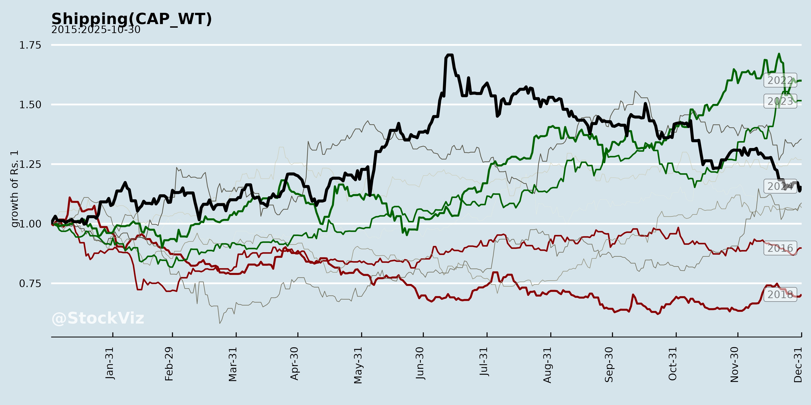
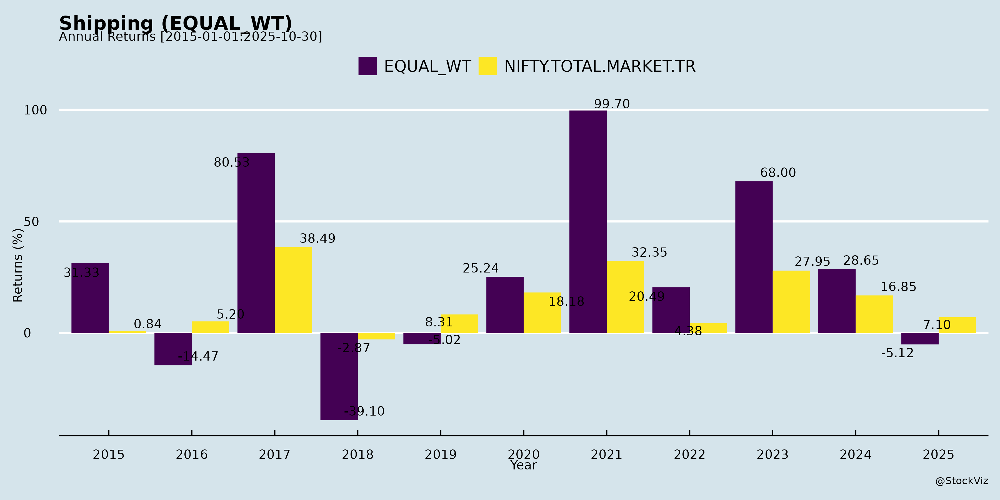
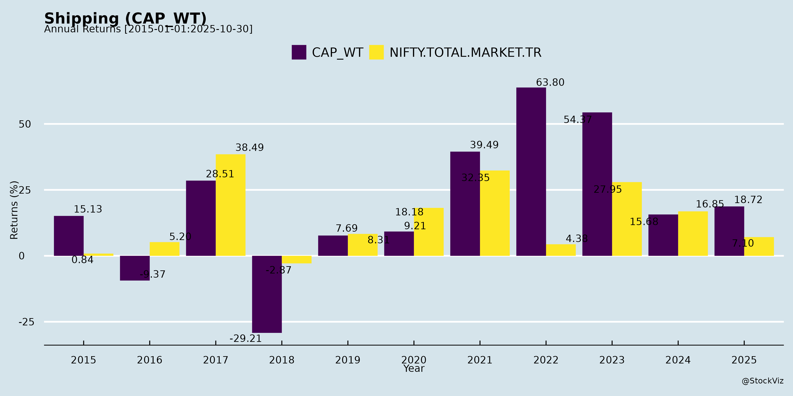
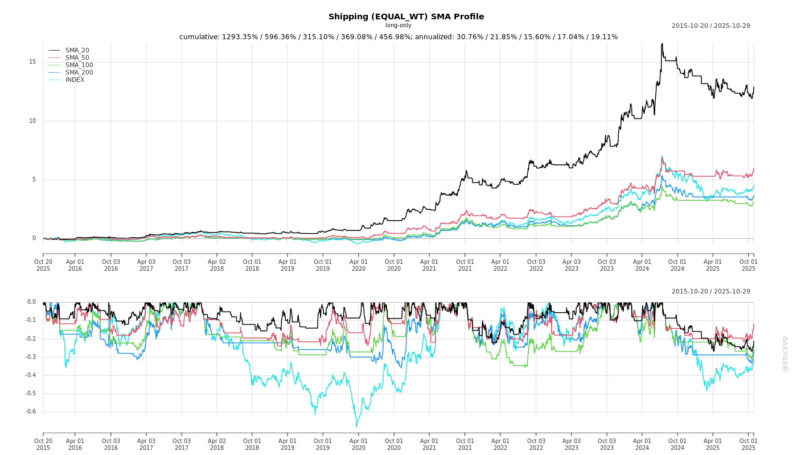
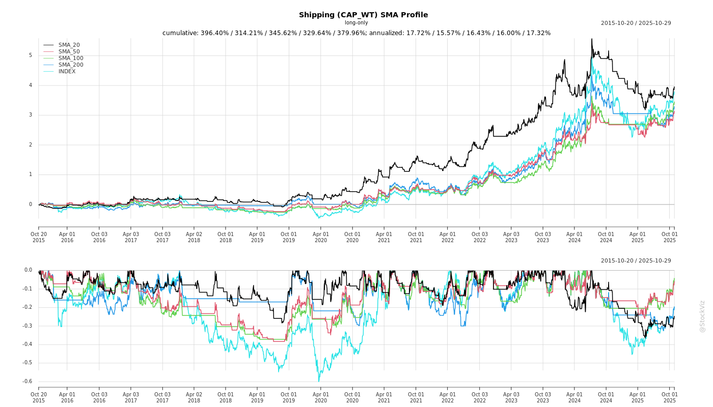
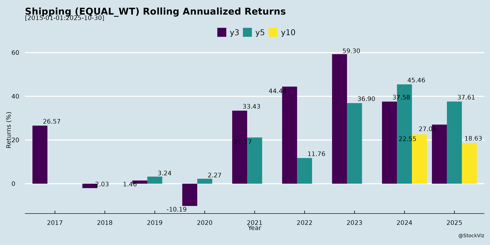
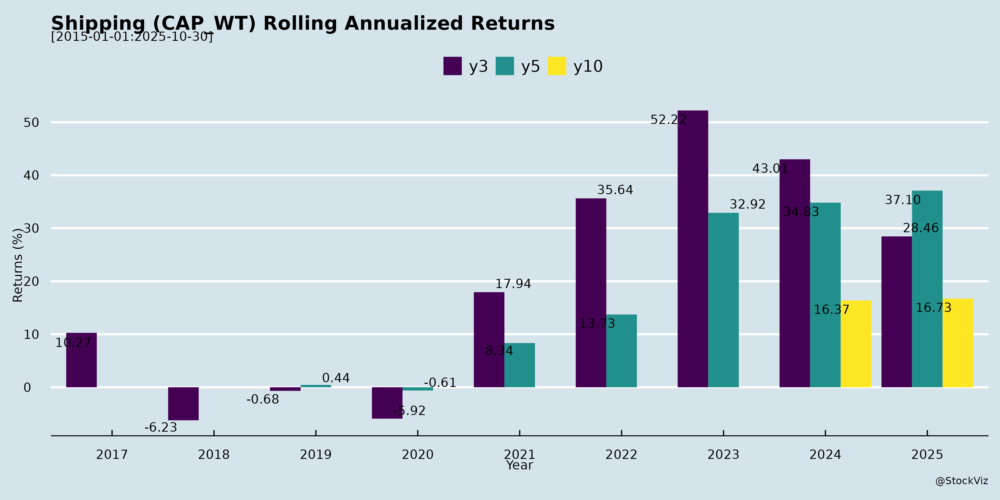

asof: 2025-11-30
Indian Shipping Sector Analysis (Based on GESHIP, SCI, and Seamec Documents)
The analysis draws primarily from The Great Eastern Shipping Company (GESHIP)’s detailed Q2 FY26 earnings transcript (key player in tankers, bulkers, LPG, and offshore), with limited insights from Shipping Corporation of India (SCI)’s earnings disclosure and Seamec’s (offshore-focused) investor roadshow intimation. GESHIP reflects broader sector dynamics: resilient spot markets, asset value stability, and cash-rich balance sheets amid global trade/geopolitical shifts.
Tailwinds
Headwinds
Growth Prospects
Key Risks
Overall Summary: Indian shipping (exemplified by GESHIP) enjoys strong tailwinds from tight supply, trade flows, and policy push, driving NAV accretion and cash piles despite softer YoY profits. Growth hinges on disciplined capex in downturns, with prospects in spot upside and diversification. Headwinds are transient (geopolitics), but risks center on volatility and execution. Sector poised for 2-3yr visibility (low new supply), favoring cash-rich players like GESHIP (P/NAV 0.73x). SCI/Seamec add offshore/govt.-backed depth. Outlook: Cautiously optimistic; hold cash, deploy opportunistically.
asof: 2025-12-01
The Indian shipping sector, as reflected in Q3 and 9M FY25 financial results from key players like The Great Eastern Shipping Company (GESHIP), Shipping Corporation of India (SCI), Transworld Shipping Lines (TSL), and limited insights from Essar Shipping, demonstrates resilience and profitability amid cyclical recovery. GESHIP and SCI reported strong profits (GESHIP: ₹593 Cr Q3 profit; SCI: ₹65 Cr consolidated 9M profit), driven by tanker and bulk segments, while TSL showed turnaround from prior losses. Tailwinds from high freight rates and fleet optimization outweigh headwinds like volatility and insurance disputes. Growth is supported by global trade and energy demand, but risks from geopolitics and claims persist. Overall, the sector outlook is positive with EBITDA margins ~50% (GESHIP) and net debt-equity negative (cash-rich balance sheets).
| Metric | GESHIP (9M FY25) | SCI (9M FY25, Consolidated) | TSL (9M FY25, Standalone) |
|---|---|---|---|
| Revenue | ₹4,100 Cr | ₹4,390 Cr | ₹336 Cr |
| Net Profit | ₹1,981 Cr (EPS ₹139) | ₹658 Cr (EPS ₹14) | ₹39 Cr (EPS ₹18) |
| Key Segments | Shipping (strong), Offshore (recovery) | Tankers (48% rev), Bulk/Liner (variable) | Shipping (single segment) |
| Risk Category | Description | Impact/Mitigation |
|---|---|---|
| Geopolitical/Route Disruptions | Red Sea/Houthi attacks (implied in forex/volatility); SCI notes agent recon. | High; Diversify routes, insurance. |
| Freight Rate Cyclicality | Spot market drops (SCI Bulk Q3 loss). | Medium; Long-term charters (GESHIP 50%+). |
| Insurance/Claims | TSL ₹37 Cr disputed recovery; cargo suits. | High; Auditor flags Ind AS 37 non-compliance. |
| Regulatory/Disinvestment | SCI privatization delays; PRP/DPE disputes. | Medium; Essar compliance lapses. |
| Fuel/Inflation | Oil price spikes (GESHIP fuel 8% rev). | Medium; Hedging (derivatives used). |
| Debt/Refinancing | SCI ₹150 Cr unallocated interest; rising rates. | Low (GESHIP prepaid borrowings). |
| FX/Interest | Rupee volatility (GESHIP forex gain ₹104 Cr but risk). | Medium; Natural hedge via USD revenues. |
Bullish near-term with profits up 15-100% YoY (GESHIP/SCI), supported by energy shipping tailwinds. Growth via modernization/IFSC could drive 12-18% revenue CAGR FY25-27, but monitor Q4 freight softness and TSL claims. Sector ROE ~20-30% sustainable if risks managed. Investors: Favor GESHIP (premium valuation) over SCI (disinvestment overhang).
Data sourced from Q3/9M FY25 filings; all figures consolidated unless specified.
asof: 2025-12-03
Indian Shipping Sector Analysis
Based on the provided announcements from key players (Great Eastern Shipping, SCI, Shreeji Shipping Global, Seamec, Essar Shipping, Transworld Shipping), the sector shows resilience amid regulatory scrutiny, with positives from dividends, expansions, and strategic shifts. Below is a structured summary of headwinds, tailwinds, growth prospects, and key risks. Analysis draws from dividend payouts (strong cash flows), compliance issues, charter deals, JV registrations, and debt actions.
Tailwinds (Positive Factors)
Headwinds (Challenges)
Growth Prospects
| Area | Key Drivers from Docs | Potential Impact |
|---|---|---|
| Coastal Logistics | Shreeji’s charter with AMNS; ongoing talks; govt incentives. | Transformational: Shift from stevedoring to integrated ops; multi-year demand from bulk cargo (e.g., steel); high entry barriers favor incumbents. |
| IFSC/Global Hubs | Seamec’s GIFT City JV. | Access to int’l funding, ship leasing; positions for offshore/international growth. |
| Stable Core Ops | Dividend consistency; Essar debt reduction. | Sustained earnings from tankers/dry bulk; annuity charters enhance revenue quality. |
| Overall | Sector evolution to “asset-backed” models; coastal as “growth engine.” | 10-20%+ revenue upside if coastal scales; PSUs like SCI stabilize with board fixes. |
Key Risks
| Risk Category | Details | Mitigation/Implications |
|---|---|---|
| Regulatory | Fines (SCI); SEBI LODR non-compliance; TDS errors leading to higher withholding/refund claims. | High for PSUs; potential escalations if unresolved. |
| Tax/Compliance | DTAA misuse (non-residents); invalid docs (PAN/TRC); Rule 37BA disputes on TDS credit allocation. | Refunds via ITR possible, but delays cash flows; indemnity clauses shift liability to shareholders. |
| Operational | Confidential charter terms (Shreeji); vessel age/compliance (e.g., <30 yrs, P&I clubs, DG Shipping). | Exposure to execution risks, counterparty defaults (e.g., AMNS). |
| Sectoral | Inferred: Govt delays (SCI); dependency on bulk cargo cycles. | Macro: Fuel volatility, geopolitics not covered but amplify dividend sustainability risks. |
| Financial | Partial debt redemptions signal ongoing leverage; higher TDS erodes net payouts. | Balance sheet strain if rates rise. |
Overall Outlook: Moderately Positive. Tailwinds from policy (coastal/IFSC) and dividends outweigh headwinds, with growth in niche areas like coastal shipping. Risks are compliance-heavy but manageable via proactive filings. Sector poised for 8-12% CAGR if regulatory hurdles clear; monitor PSU governance and global trade. Investors: Focus on dividend yields, charter backlogs.
asof: 2025-11-30
Summary Analysis of Indian Shipping Sector
Based on the provided documents, primarily the Q2 FY26 earnings call transcript of The Great Eastern Shipping Company Limited (GESHIP) (India’s largest private shipping firm), supplemented by disclosures from Shipping Corporation of India (SCI) and Seamec Limited (offshore-focused), the Indian shipping sector shows resilience amid volatile global markets. GESHIP reports steady profits (Rs.581 Cr consolidated), NAV growth (Rs.60/share QoQ to ~Rs.1,484), and a net cash position of ~$550 Mn, with a modernizing fleet (~40 vessels post-commitments). SCI and Seamec indicate ongoing investor engagement but lack detailed insights. Key themes include spot market exposure, currency matching via USD swaps, and caution on high order books. Below is a structured analysis of headwinds, tailwinds, growth prospects, and key risks.
Tailwinds (Positive Factors)
Headwinds (Challenges)
Growth Prospects
Key Risks
Overall Outlook: Balanced—tailwind from supply tightness/crude strength offsets headwinds in products/LPG. Growth via opportunistic buying in downturns; risks tilted to volatility but mitigated by cash fortress/conservative leverage. GESHIP’s normalized profits stable; sector poised for govt-backed domestic upside. Monitor Russian sanctions, China demand, and orderbook deliveries.
asof: 2025-12-01
Indian Shipping Sector Analysis (Based on Q2/H1 FY26 Filings)
The provided filings from key players—Great Eastern Shipping (GESHIP), Shipping Corporation of India (SCI), Shreeji Shipping Global (SHREEJISPG), Seamec Ltd., Essar Shipping, and Transworld Shipping Lines (TSLL)—offer insights into the sector’s mixed performance amid volatile freight rates, fleet expansions, and operational challenges. Overall, tankers and bulk segments show resilience, but offshore and liner segments face pressures. H1 FY26 revenue growth (e.g., SCI +5% YoY standalone) contrasts with patchy profitability due to costs and one-offs.
Tailwinds (Positive Drivers)
Headwinds (Challenges)
Growth Prospects
Key Risks
Summary: Indian shipping benefits from tanker/bulk tailwinds and fleet investments (H1 revenue up ~5-10% YoY for majors), but headwinds from costs/losses temper outlook. Growth hinges on expansions/disposals (SCI/Essar), with FY26 PAT potentially flat-to-up 5-10% if rates hold. Risks center on ops/debt; monitor Q3 for freight recovery. Sector PE ~8-12x; selective buys in tankers/offshore.
asof: 2025-11-30
Indian Shipping Sector Analysis (Based on Provided Announcements)
The analysis draws from recent disclosures by three listed Indian shipping companies: Great Eastern Shipping (G E Shipping) (diversified tanker/dry bulk), Shreeji Shipping Global (dry-bulk logistics focus), and Transworld Shipping Lines (container feeder/dry bulk). These reflect a mixed sector outlook: strength in dry bulk and logistics amid container segment weakness. Key metrics show revenue growth in Shreeji (+17% YoY H1 FY26), fleet optimization at G E Shipping, but losses at Transworld due to aging assets.
Tailwinds (Positive Drivers)
Headwinds (Challenges)
Growth Prospects
Key Risks
| Risk Category | Description | Impacted Companies |
|---|---|---|
| Fleet Age/Availability | High replacement costs; few suitable vessels (Transworld). | Transworld (high); G E Shipping (managed via sales). |
| Geopolitical/Macro | Freight rate volatility, U.S./Europe demand weakness, tensions. | All (container-heavy Transworld most exposed). |
| Operational/Cost | Maintenance surges, seasonal monsoons, lay-ups. | Transworld (losses); Shreeji (mitigated). |
| Financial | Exceptional items distort profits; equity needs for capex. | Shreeji (one-off income); Transworld (funding gap). |
| Regulatory/Market | Port restrictions, oversupply; forward-looking uncertainties (disclaimers). | All. |
Summary
Bullish on Dry Bulk/Logistics (Shreeji, G E Shipping) with tailwinds from demand, margins, and expansions outweighing seasonal headwinds; cautious on Containers (Transworld) due to aging fleets and global softness. Overall Sector: Moderately positive growth (10-20% revenue potential FY26) via modernization and domestic focus, but risks from macros and capex loom large. Investors should monitor fleet renewal progress and freight indices (e.g., BHSI/SCFI) for Q3 FY26 inflection. Dry bulk outperforms containers amid volatility.
Copyright © 2023 SAS Data Analytics Pvt. Ltd. All rights reserved.